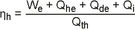

(Fundstelle: BGBl. 2024 I Nr. 43, S. 12)
| Mindestanforderungen an Energieeffizienzwerte (in Prozent) |
| Anlage | Feste Siedlungsabfälle und sonstige nicht gefährliche Abfälle sowie gefährliche Holzabfälle | Gefährliche Abfälle
mit Ausnahme von gefährlichen Holzabfällen1 | Klärschlamm |
Elektrischer Gesamt-
wirkungsgrad (brutto)2 , 3 | Brutto-
energieeffizienz4 | Kesselwirkungsgrad |
| Bestehende Anlage | 20 | 725 | 60 | 606 |
| Alle anderen Anlagen | 25 |
- Der Energieeffizienzwert gilt nur, wenn ein Abhitzekessel anwendbar ist.
- Die Energieeffizienzwerte für den elektrischen Bruttowirkungsgrad gelten nur für Anlagen oder Teile von Anlagen, die mit einer Kondensationsturbine Strom erzeugen, unter Berücksichtigung möglicher Entnahmen vor Entnahmekondensationsturbinen.
- Ein Energieeffizienzwert von bis zu 35 Prozent kann durch höhere Dampfzustände erreicht werden.
- Die Energieeffizienzwerte für die Bruttoenergieeffizienz gelten nur für Anlagen oder Teile von Anlagen, die nur Wärme erzeugen oder die mit einer Gegendruckturbine Strom und aus dem Dampf aus der Turbine Wärme erzeugen.
- Eine höhere Bruttoenergieeffizienz, die sogar über 100 Prozent hinausgeht, kann erreicht werden, wenn ein Abgaskondensator verwendet wird.
- Bei der Verbrennung von Klärschlamm ist der Kesselwirkungsgrad stark abhängig vom Wassergehalt des Klärschlamms, der in die Feuerung eingeleitet wird.
|
Erläuterung:
Die Energieeffizienzwerte für die Verbrennung von nicht gefährlichen Abfällen, ausgenommen Klärschlamm, und von gefährlichen Holzabfällen werden wie folgt ausgedrückt:
Elektrischer Bruttowirkungsgrad bei einer Abfallverbrennungsanlage oder einem Teil einer Abfallverbrennungsanlage, die mit einer Kondensationsturbine Strom erzeugt; Bruttoenergieeffizienz bei einer Abfallverbrennungsanlage oder einem Teil einer Abfallverbrennungsanlage, die:
- •
nur Wärme erzeugt, oder
- •
mit einer Gegendruckturbine Strom und mit dem die Turbine verlassenden Dampf Wärme erzeugt.
Dies wird wie folgt ausgedrückt:
| Elektrischer Bruttowirkungsgrad |  |
| Bruttoenergieeffizienz |  |
Dabei ist:
| • | Qb: | Wärmeleistung, die vom Kessel erzeugt wird, in MW; |
| • | Qde: | direkt abgegebene Wärmeleistung (als Dampf oder Heißwasser) abzüglich der Wärmeleistung des Rücklaufs, in MW; |
| • | Qhe: | Wärmeleistung, die den Wärmetauschern auf der Primärseite zugeführt wird, in MW; |
| • | Qi: | Wärmeleistung (als Dampf oder Heißwasser), die intern genutzt wird (z. B. zur Abgasaufheizung oder Entnahme vor Entnahmekondensationsturbinen), in MW* ; |
| • | Qth: | Wärmeeintrag in die thermischen Behandlungseinrichtungen (zum Beispiel Feuerraum) einschließlich der Abfälle und Hilfsbrennstoffe, die kontinuierlich genutzt werden (ausgenommen zum Beispiel für die Anfahrphase), in MWth, ausgedrückt als unterer Heizwert; |
| • | We: | Erzeugte elektrische Leistung in MW. |
Die Energieeffizienzwerte für die Verbrennung von Klärschlamm und gefährlichen Abfällen (ausgenommen gefährliche Holzabfälle) werden als Kesselwirkungsgrad ausgedrückt.
- Dies schließt Energie zur Wasserverdampfung bei abwasserfreiem Betrieb ein.